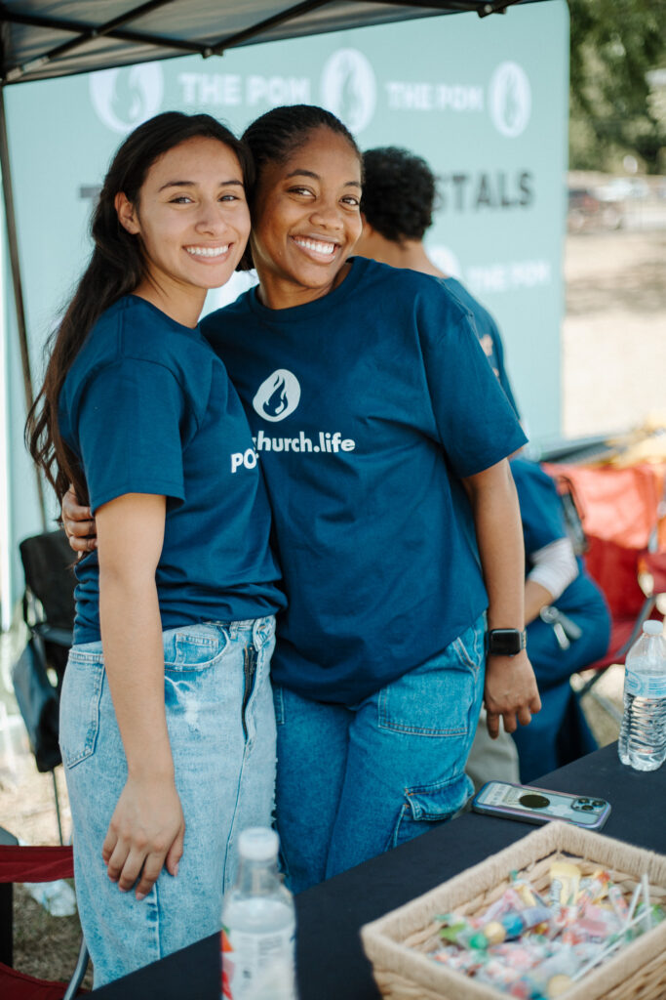
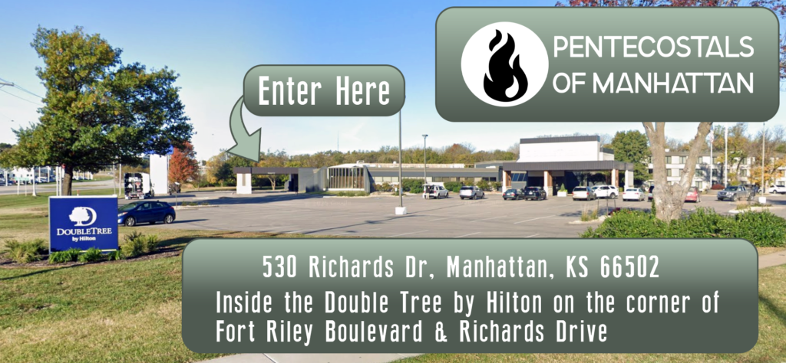

Friendly people
You can expect real people who are glad you came, ready to answer questions without pressure.
Worship begins at 10:30 AM.
Inside the DoubleTree by Hilton in Manhattan, Kansas.
Worship, prayer, biblical preaching, and space to respond.
Visiting a new church should not feel complicated. POM is built to be warm, clear, and welcoming from the moment you arrive.
You can expect real people who are glad you came, ready to answer questions without pressure.
There is no dress code. Wear what you are comfortable wearing to church.
Age-specific children’s ministry and nursery care are available during Sunday worship.
POM values Spirit-filled worship, prayer, practical preaching, and a genuine encounter with God.


Enter the DoubleTree property from Richards Drive. Use the church signage and welcome team to find the meeting room.
Send a quick note and POM can help make your first Sunday easier. The form opens your email app so no personal information is stored by this static website.